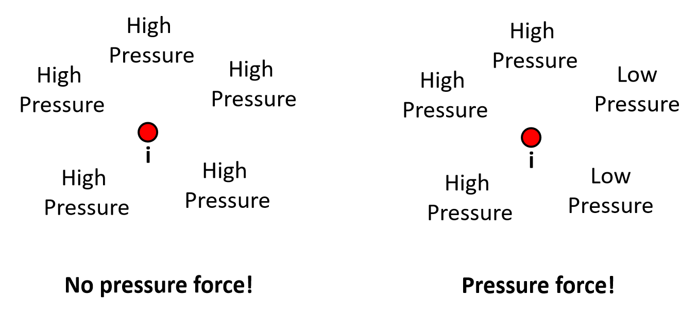
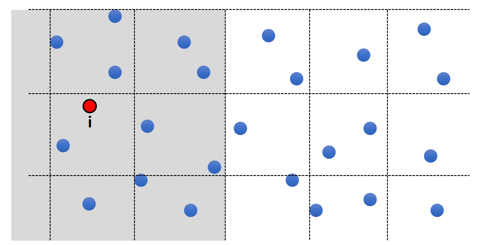

P16
SPH-Based Fluids
P17
Consider a (Lagrangian) particle system: each water molecule is a particle with physical quantities attached, such as position \(\mathbf{x}_i\), velocity \(\mathbf{v}_i\), and mass \(m_i\).

✅ 用粒子来表达流体，物理变量附着在粒子上。先通过粒子系统的方式独立计算每个粒子。粒子转化为三角网格再渲染，或直接渲染带透明贴图的粒子(游戏)。
关键在于怎样构造粒子所受到的力，使粒子的运动效果看上去像水分子的运动。
- We model fluid dynamics by applying three forces on particle i.
- Gravity
- Fluid Pressure
- Fluid Viscosity
P18
Gravity Force
- Gravity Force is:
$$ \mathbf{F} _ \mathbf{i}^ \mathbf{gravity} = m _i \mathbf{g} $$
P19
\(\mathbf{g}\) 可以单指重力，也可以指所有的外力。
Pressure Force
✅ WCSPH：弱可压缩流体
计算密度 → 计算压强 → 计算压力，这是弱可压缩流体的关键。
严格不可压缩流体，速度散度严格为0，只能通过迫松方程求解，因为密度不变，不能反应压力。而 WCSPH 允许密度可变，并建立“密度 —— 压力”反馈方程。
计算密度
First compute the density of Particle i:
$$ \rho _ i = \sum _ j m _ j W _ {ij} $$
计算压强
$$ P_i=k((\frac{\rho _i}{\rho _\mathrm{constant } } )^7-1) $$
✅ 密度到压强的计算是一个经验公式。直观理解就是：密度大 → 压强大 → 推动周围粒子离开自己 → 保体积效果
- To compute this pressure gradient, we assume that the pressure is also smoothly represented:
$$ P_i^{smooth}= \sum _ j V_jP_j W_{ij} $$
✅ 假设空间是一个压强场、粒子是空间中的采样。\(P^{smooth}\)是通过周粒子\(P\)的插值得到的采样点压强。
通过 smooth 函数，把离散值变成连续值，以便于微分计算。这是一种常用技巧。
压强转化为力
P20
- Pressure force depends on the difference of pressure:
从公式上理解：
$$ \frac{D\boldsymbol{v}}{Dt}=-\frac{1}{\rho}\nabla \mathbf{p}+\boldsymbol{g} $$
公式中的 \(\boldsymbol{g} \) 不在这里考虑，仅考虑 \(\mathbf{p}\) 对 \(\boldsymbol{v}\) 的影响
求 \(\mathbf{p}_i^{smooth}\) 的梯度的过程见补充
代入即可求得粒子的速度变化
$$ \Delta \boldsymbol{v}=\Delta t \cdot \frac{D\boldsymbol{v}}{Dt}=-\frac{1}{\rho}\Delta t \nabla \mathbf{p}_i^{smooth}=\Delta t \frac{\boldsymbol{F}_i^{Pressure}}{m} $$
$$ \boldsymbol{F}_i^{Pressure}=-\boldsymbol{v}_i \nabla \mathbf{p}_i^{smooth} $$
从物理上理解。

压强差产生压力。
P21
- Mathematically, the difference of pressure => Gradient of pressure.
$$ \mathbf{F} _i^{pressure}=-V_i\nabla _iP^{smooth} $$
✅ 体积为粒子在空间中占有的体积，体积越大受到的压力越大、\(\nabla\)代表压强的差。
- So:
$$ \mathbf{F} _ i^{pressure} = - V _ i \sum _ j V _ j P _ j \nabla _ i W _ {ij} $$
P22
Viscosity Force 粘滞力
粘滞所产生的效果
- Viscosity effect means: particles should move together in the same velocity.
- In other words, minimize the difference between the particle velocity and the velocities of its neighbors.

✅ Viscosity (粘滞)类似于 damping (阻尼)，但有些区别，后者的目标是让粒子的运动停下来，前者的目的是让所有粒子的运动整齐划一，即速度差趋于0.
✅ smooth 会产生粘滞的效果。
P23
计算粘滞力
- Mathematically, it means:
$$ \mathbf{F} _i^{viscosity}=-\nu m_i\Delta _i\mathbf{V} ^{smooth} $$
✅ \(\nu\)：粘滞系数， \(\Delta \nu\)：速度的 Laplacian. 注意速度是3D矢量。
- To compute this Laplacian, we assume that the velocity is also smoothly represented:
$$ \mathbf{V} _i^{smooth}= \sum_jV_j \mathbf{v} _ j W _ {ij} $$
- So:
$$ \mathbf{F} _i^{viscosity}=-\nu m_i\sum _jV_j\mathbf{v} _j\Delta _iW _{ij} $$
P24
Algorithm
- For every particle i
- Compute its neighborhood set
- Using the neighborhood, compute:
- Force = 0
- Force + = The gravity force
- Force + = The pressure force
- Force + = The viscosity force
- Update \(v_i = v_i + t * \text{ Force } / m_i\);
- Update \(x_i = x_i + t * v_i\);
这是显式积分的流程，也可以把它们转为隐式积分方式。
补充 1：Spatial Partition加速求最近邻
P25
Exhaustive Neighborhood Search
| $$ \color{Red}{ \text{ What is the bottleneck of the performance here?}} $$ |
|---|
- Search over every particle pair? O(\(N^2\))
- 10M particles means: 100 Trillion pairs…
✅ 性能瓶颈在于搜索邻居，因为总粒子数为百万级。
P26
Solution: Spatial Partition
- Separate the space into cells
- Each cell stores the particles in it
- To find the neighborhood of i, just look at the surrounding cells

其它技巧：位压缩，Moten 编码，Compact hashing, AI 方法
P27
遗留问题：
- What if particles are not uniformly distributed?
✅ 例如水花喷溅的效果，通常靠近水面的粒子小一点，更利于表现细节。
- Solution: Octree, Binary Spatial Partitioning tree…

P28
补充 2：流体粒子渲染
• Need to reconstruct the water surface from particles!

✅ 点云转成三角面片用于渲染也是一个比较复杂的问题。
✅（1）平滑方法：bias kemal（见GAMES 102）或 vdb
✅（2）把球转为SDF，SDF转为 Mesh (Marching Cubes)
补充 3：计算梯度
这个奇怪的梯度计算公式能让计算结果稳定。

本文出自CaterpillarStudyGroup，转载请注明出处。
https://caterpillarstudygroup.github.io/GAMES103_mdbook/